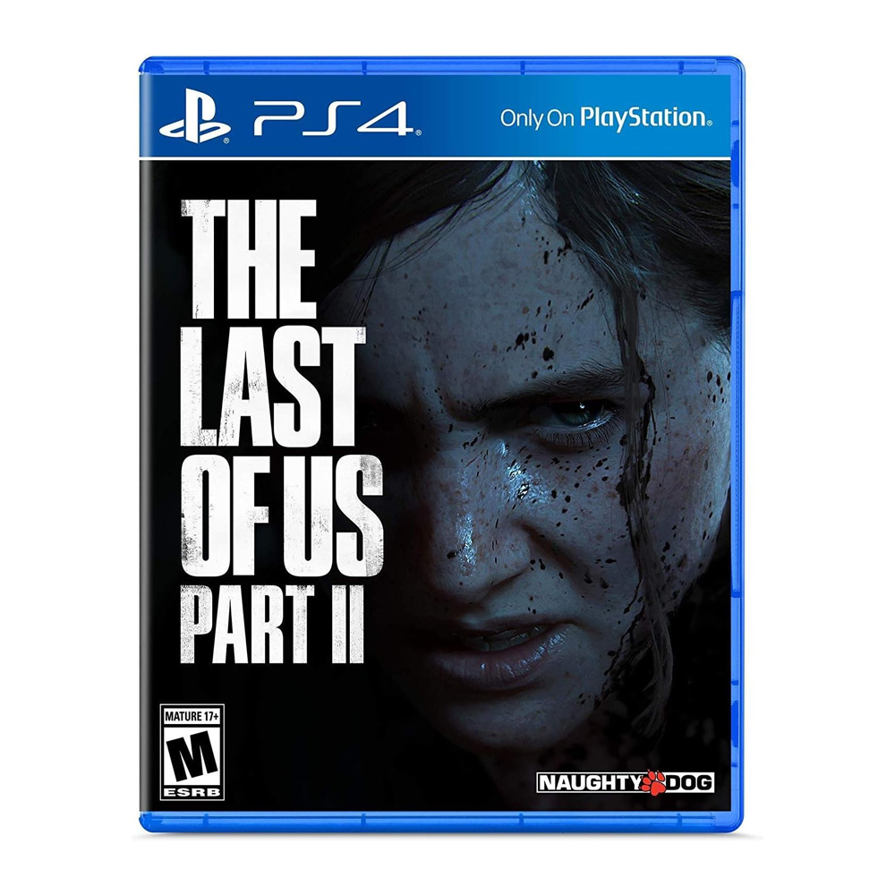
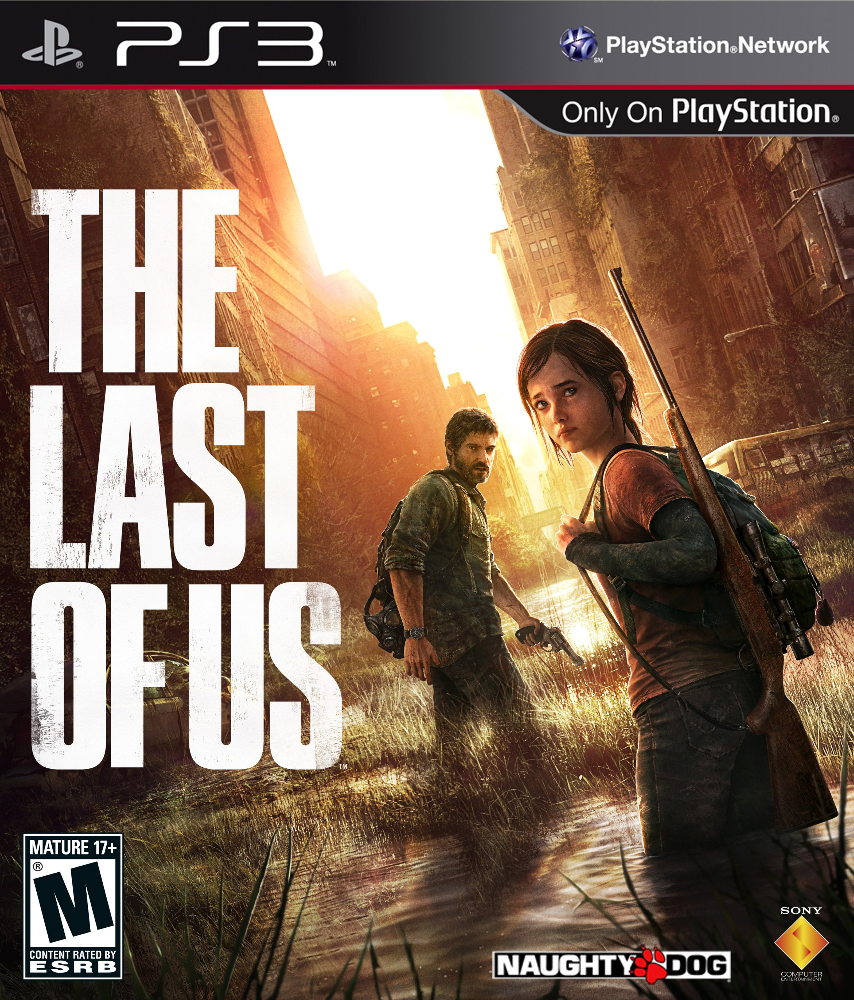
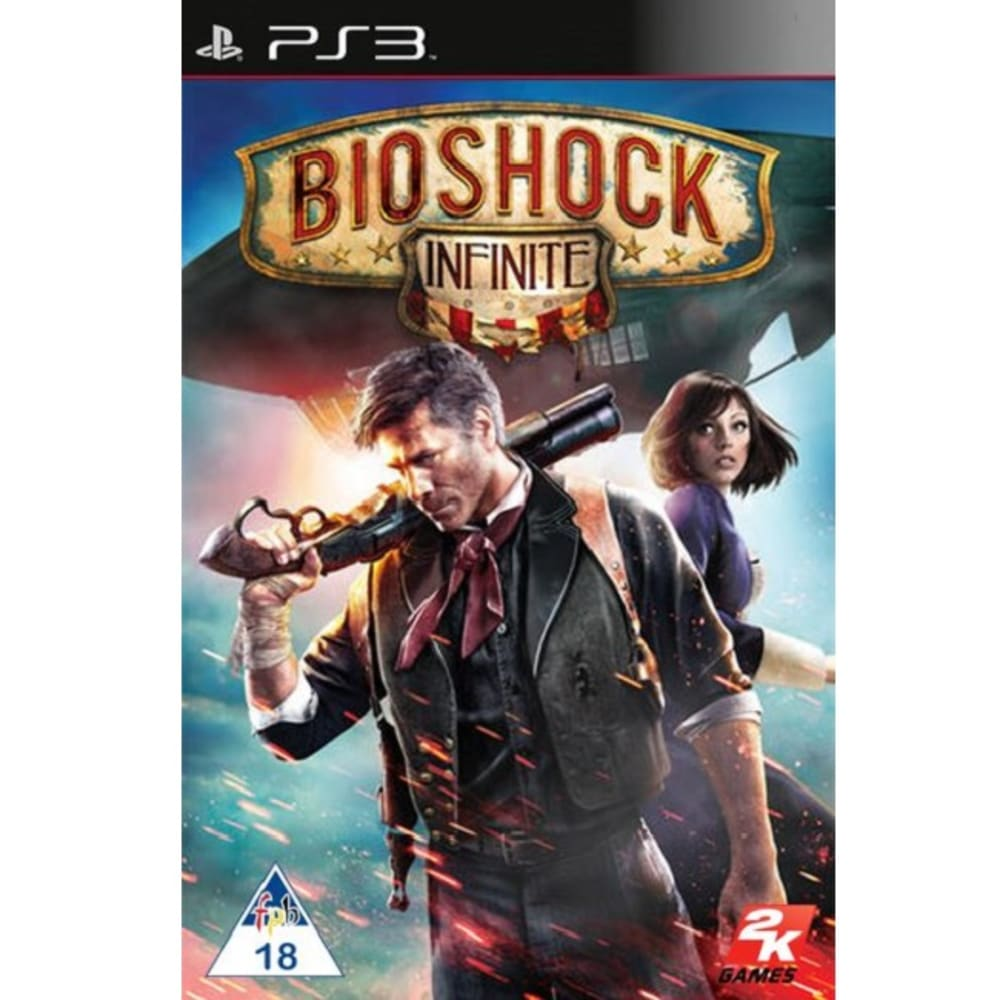
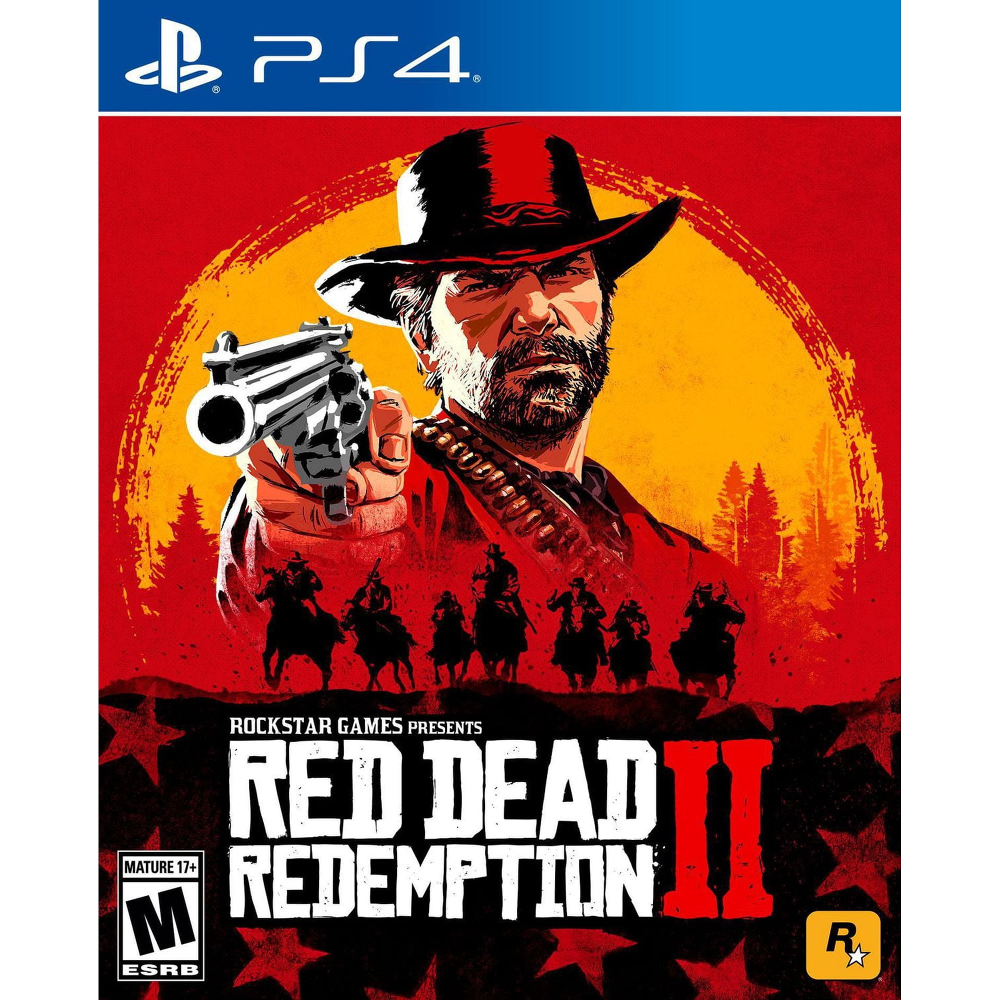
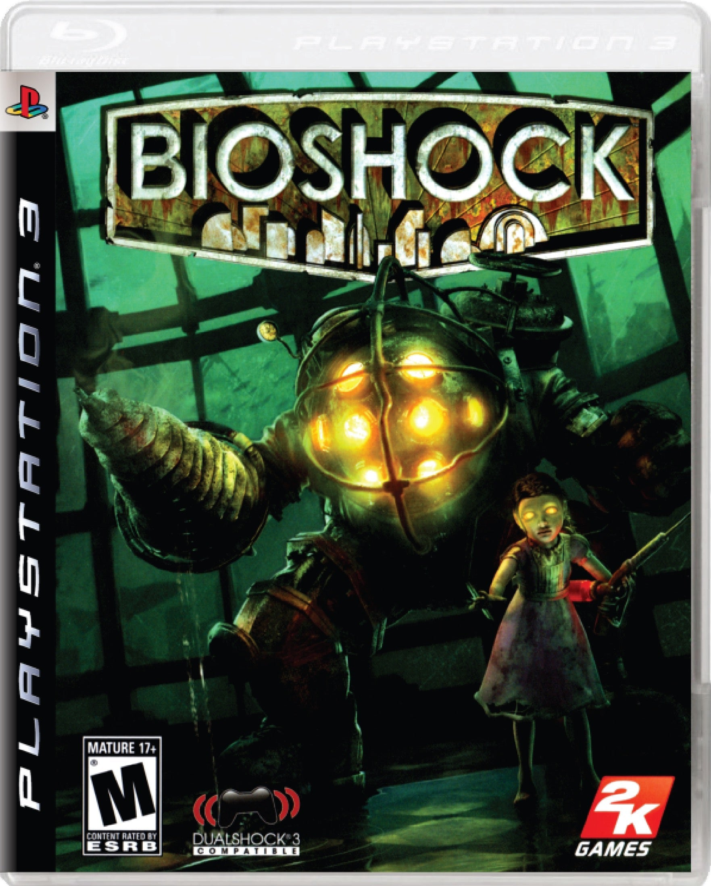
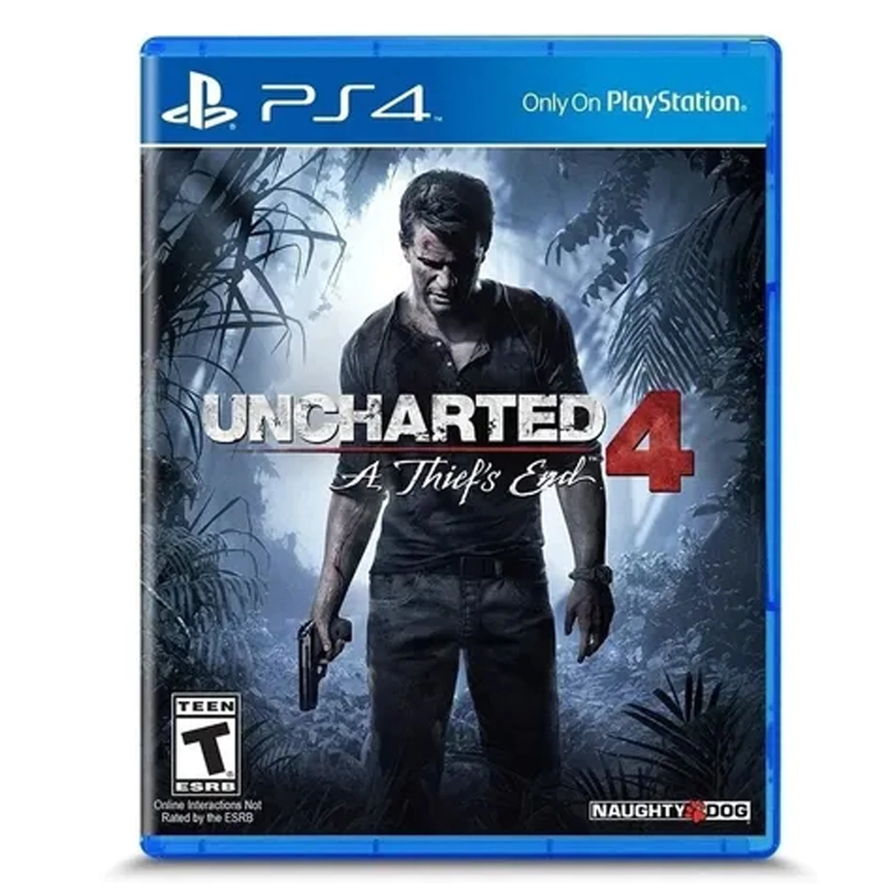
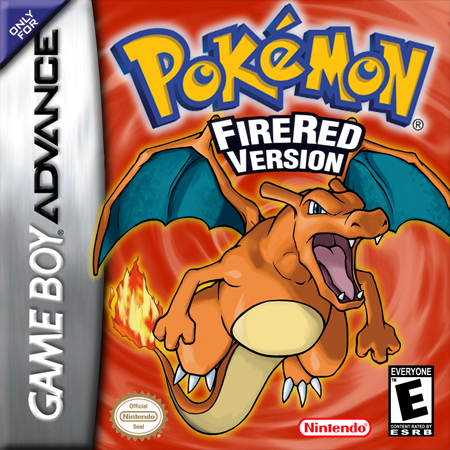
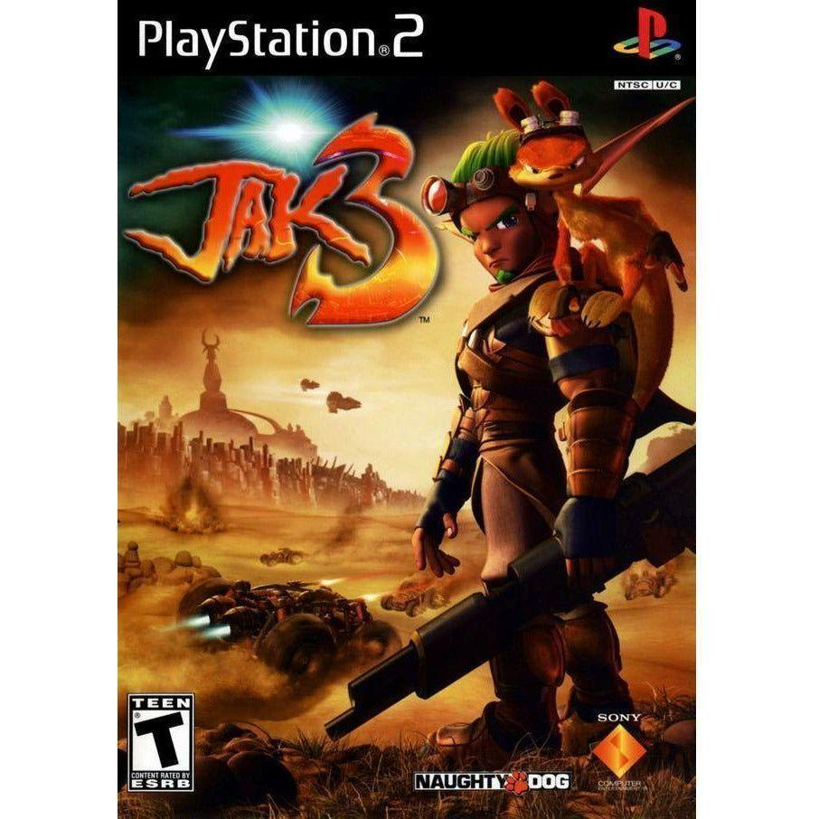
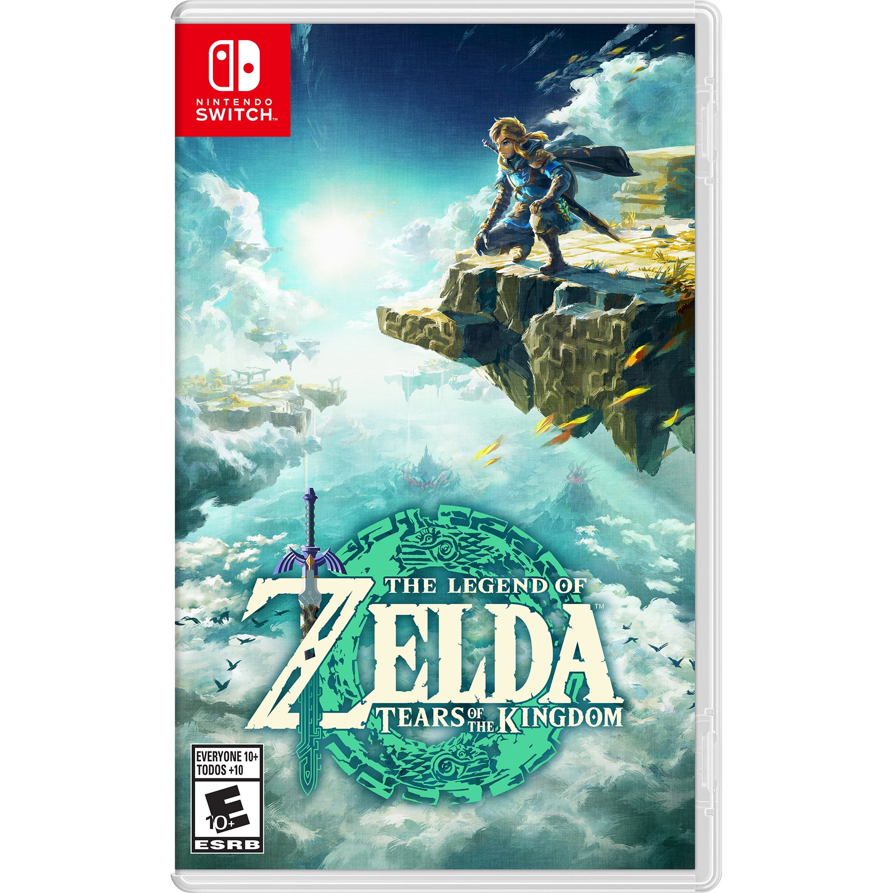
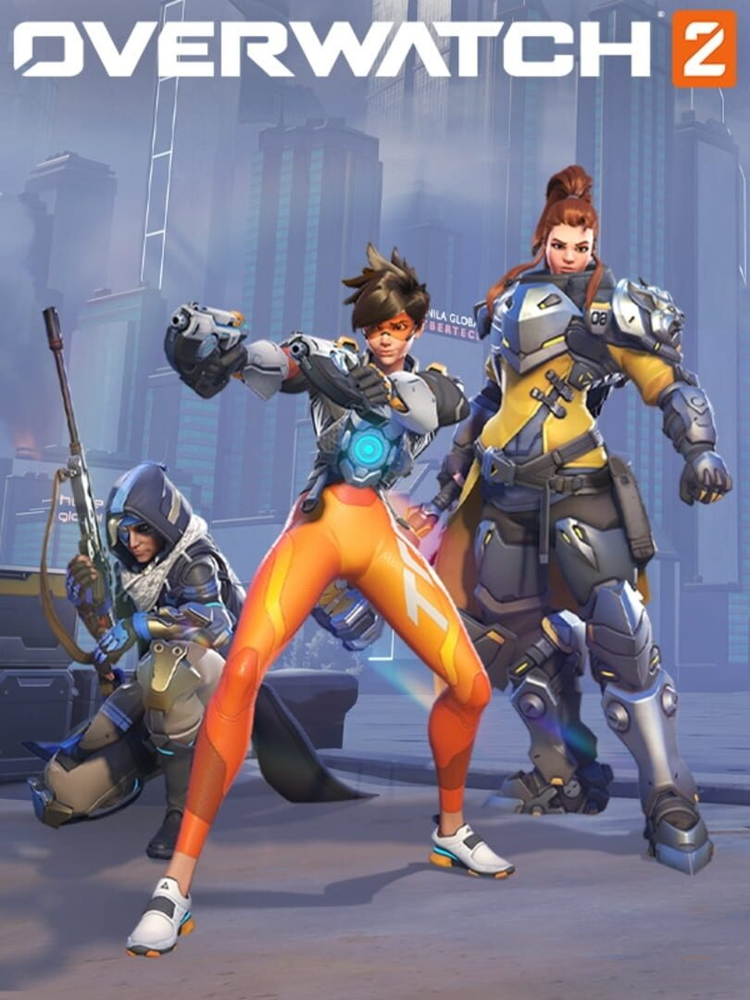

Different worlds.
Lasting inspiration.
Ten games that belong in my all-time favorites.
Explore my top 10Another way to see.
I’ve been playing games since childhood, when my dad gave me a GameCube. I’ve always been fascinated by games and art in general.
Creating my own games helps me understand the game development process, put what I study into practice and exercise my mind and creativity. It’s also a way to turn that inspiration into experiences other people can enjoy.
The games that stay.
My favorites, ranked from first to tenth.
- 01

Perspective & empathyThe Last of Us Part II
A story of grief and revenge that invites you to see the same conflict through different perspectives and presents an impossible challenge—one measured not by the player’s skill, but by their ability to forgive the unforgivable.
- 02

Human connectionsThe Last of Us
Joel and Ellie’s journey places human connection at the heart of a world shaped by survival and the pain of grief.
- 03

Ideas & possibilitiesBioShock Infinite
Columbia brings together striking art direction, unexpected ideas and a story built around possibilities.
- 04

A world to inhabitRed Dead Redemption 2
Arthur Morgan’s journey unfolds in a richly detailed world, where quiet moments matter as much as the action.
- 05

Atmosphere & discoveryBioShock
“A man chooses, a slave obeys”—just one of the game’s many memorable lines. Rapture, an underwater city, turns a place into a story, using its spaces, atmosphere and discoveries to explore ambition and choices.
- 06

Adventure & storytellingUncharted 4: A Thief’s End
A cinematic adventure that combines exploration and spectacle with a more personal chapter in Nathan Drake’s story—the Indiana Jones of this generation.
- 07

Curiosity & explorationPokémon FireRed
Kanto is a world of discovery: new routes, unexpected encounters and a team that grows along the journey. Charizard is forever the GOAT.
- 08

Freedom & varietyJak 3
A mix of platforming, combat and desert exploration, set in a world full of personality and a spirit of adventure. The first game that ever made me cry.
- 09

Creative problem-solvingThe Legend of Zelda: Tears of the Kingdom
Hyrule becomes a playground for experimentation, where building, exploring and trying unusual solutions are part of the adventure.
- 10

Teamwork & adaptationOverwatch 2
Distinct heroes and complementary roles make every match an exercise in teamwork, precision and adapting to change. I’ll always cherish those late-night calls with friends.